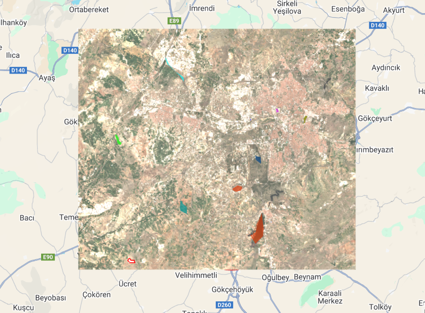
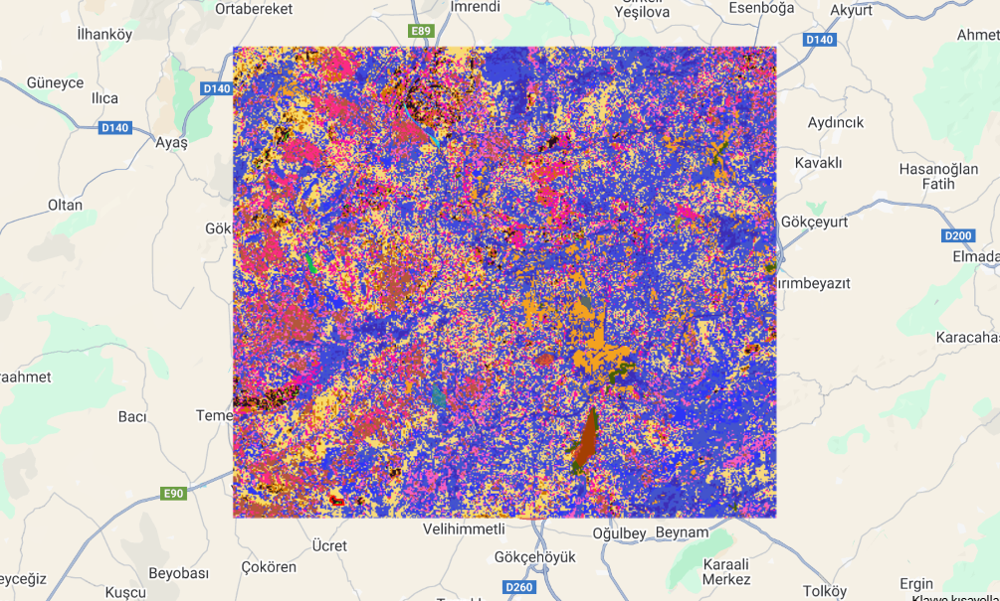

Burada, çeşitli coğrafi bilgi sistemleri (GIS) ve web geliştirme projelerimi görebilirsiniz.
| Proje Adı | Teknoloji | Açıklama | Görsel Örnek |
|---|---|---|---|
| RGB Analiz Projesi | Görüntü İşleme, Python/GIS | Uydu görüntülerindeki RGB renk bileşenlerinin analizi ve görselleştirilmesi. |  |
| K-15 Sınıflandırma | Makine Öğrenimi, GIS, Veri Analizi | Farklı tematik veriler üzerinde K-15 sınıflandırma algoritması uygulaması. |  |